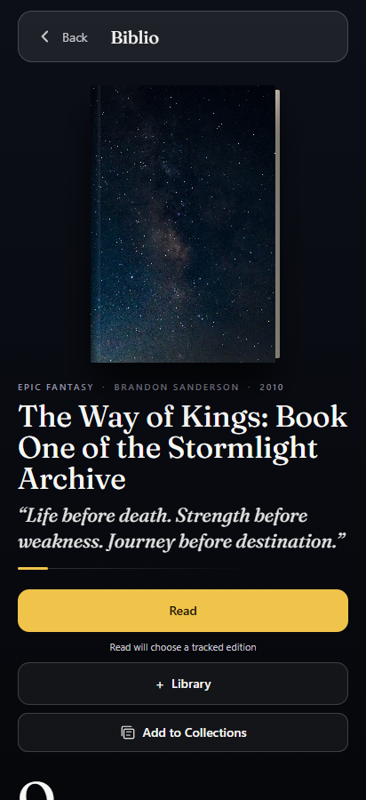
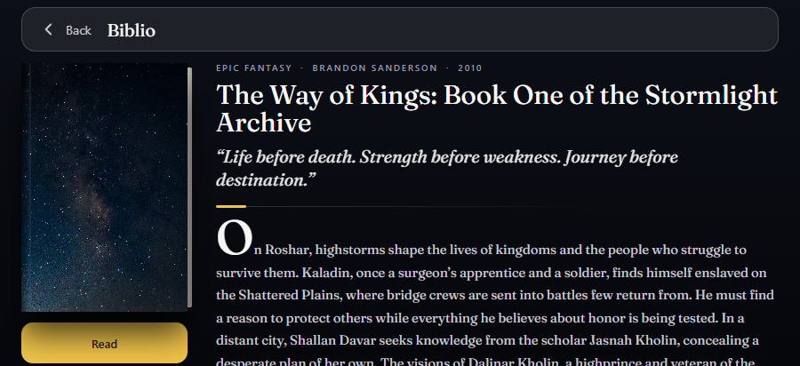
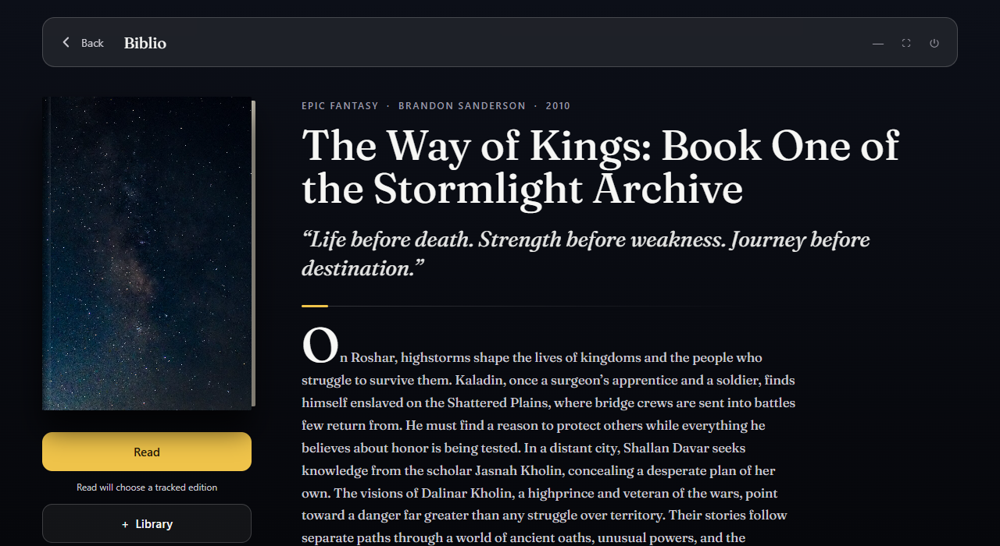
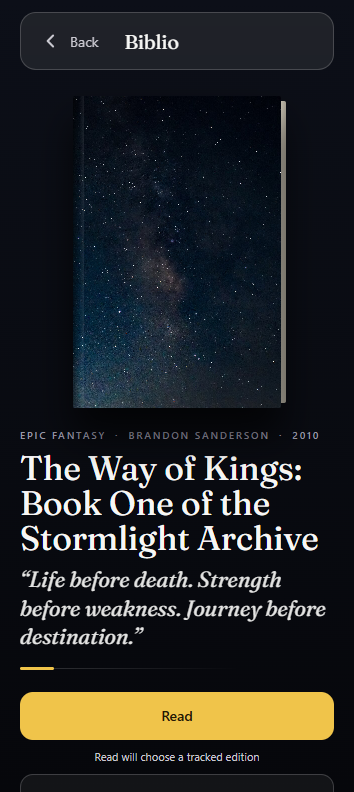
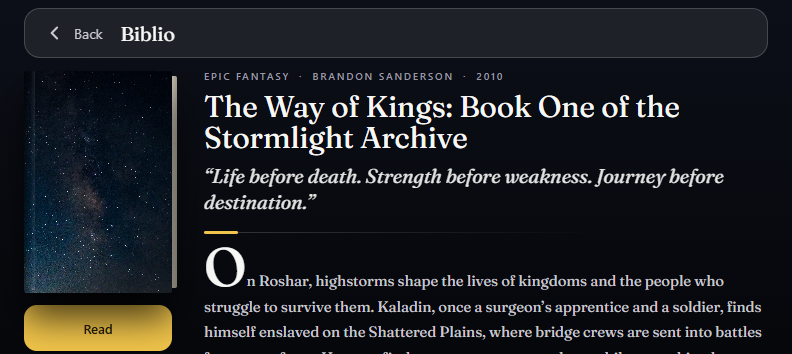
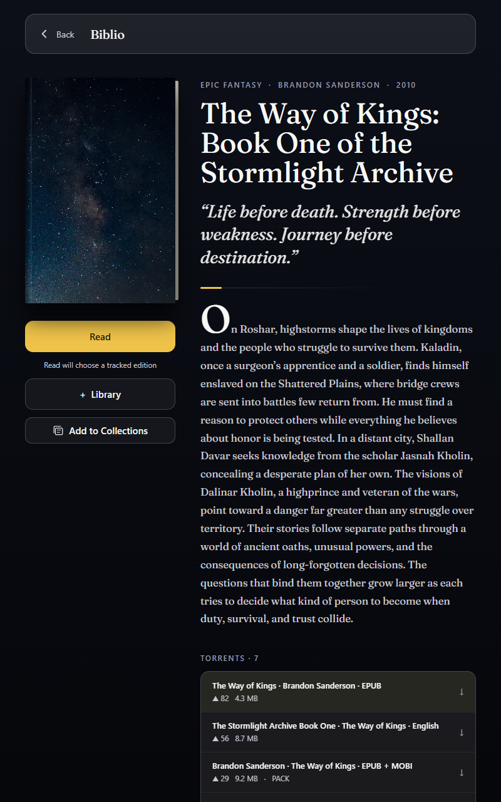
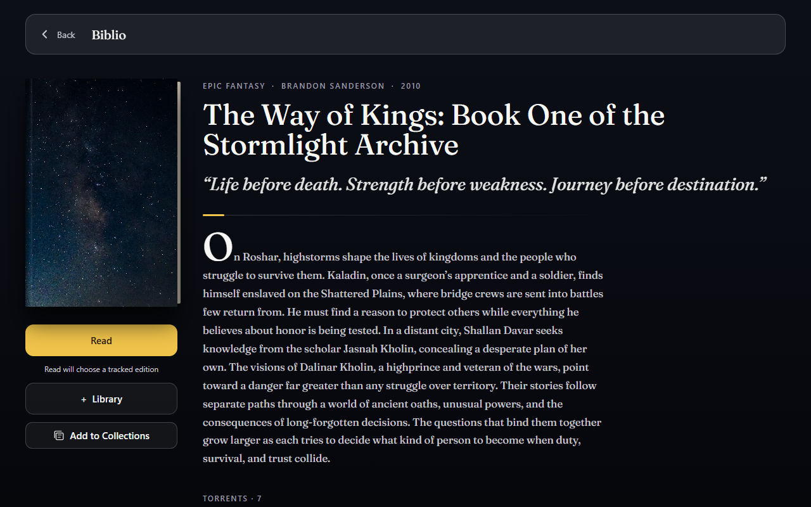
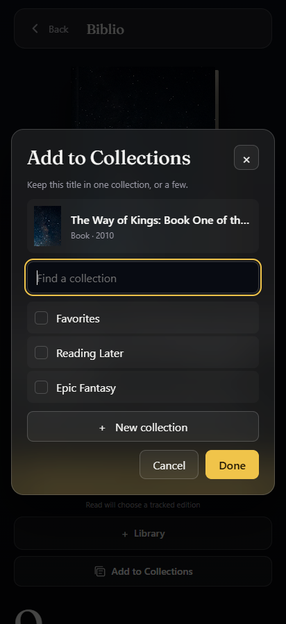
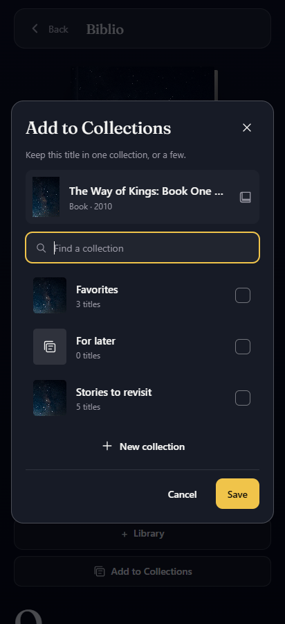
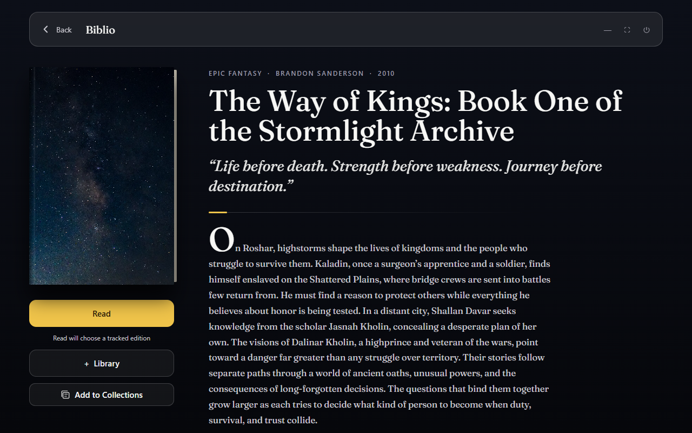

Biblio book — comparison
Finished index · Review · QML notes
Run finished workbenchRun preserved original
Original worker HTML is a baseline, not approved native output. Both versions retain disclosed project artwork stand-ins. Full screenshots and metadata are linked below. Different-state comparisons explicitly name the tested transition.
Full synopsis; Read chooser; 7 expanded torrents; final audiobook rows; library; Collections save/cancel/create.
412×900 portrait
Original worker HTML
412×900 · 2026-10-31T22:42:31.613Z · SHA-256 083d5a7bc926f400d00261d6551a3f1f8e59b8bdd2ecf4b487681e1d864d4229
Capture metadata
biblio-portraitFinished HTML 412×900 · 2026-10-31T23:26:44.185Z · SHA-256 083d5a7bc926f400d00261d6551a3f1f8e59b8bdd2ecf4b487681e1d864d4229
412×900 · 2026-10-31T23:26:44.185Z · SHA-256 083d5a7bc926f400d00261d6551a3f1f8e59b8bdd2ecf4b487681e1d864d4229
Capture metadata
biblio-finished-verified-portrait 900×412 landscape
Original worker HTML
900×412 · 2026-10-31T22:42:34.715Z · SHA-256 044e9995393b5712d1cae755ca9f9ea26af1c0b012e88ed45f33fdb7ed1b73ad
Capture metadata
biblio-landscapeFinished HTML 900×412 · 2026-10-31T23:26:47.811Z · SHA-256 044e9995393b5712d1cae755ca9f9ea26af1c0b012e88ed45f33fdb7ed1b73ad
900×412 · 2026-10-31T23:26:47.811Z · SHA-256 044e9995393b5712d1cae755ca9f9ea26af1c0b012e88ed45f33fdb7ed1b73ad
Capture metadata
biblio-finished-verified-landscape 1280×700 desktop HTML comparison
Original worker HTML
1280×700 · 2026-10-31T22:42:37.894Z · SHA-256 cb248d36f890447f3109a6de47f518d02459575fe964ef78658e87180306c3ff
Capture metadata
biblio-desktop-htmlFinished HTML 1280×700 · 2026-10-31T23:26:51.088Z · SHA-256 cb248d36f890447f3109a6de47f518d02459575fe964ef78658e87180306c3ff
1280×700 · 2026-10-31T23:26:51.088Z · SHA-256 cb248d36f890447f3109a6de47f518d02459575fe964ef78658e87180306c3ff
Capture metadata
biblio-finished-verified-desktop-html 354×792 portrait
Original worker HTML
354×792 · 2026-10-31T22:42:33.242Z · SHA-256 986aac6117389fd5221bc97ac03f84e90b924e4e954656c8cd208c461b350290
Capture metadata
biblio-portrait-smallFinished HTML 354×792 · 2026-10-31T23:26:46.155Z · SHA-256 986aac6117389fd5221bc97ac03f84e90b924e4e954656c8cd208c461b350290
354×792 · 2026-10-31T23:26:46.155Z · SHA-256 986aac6117389fd5221bc97ac03f84e90b924e4e954656c8cd208c461b350290
Capture metadata
biblio-finished-verified-portrait-small 792×354 landscape
Original worker HTML 792×354 · 2026-10-31T22:42:35.998Z · SHA-256 2f094e8839f954a044b82f185783cfbb1a822e8301d2c8b222a42da5a978ffa5
792×354 · 2026-10-31T22:42:35.998Z · SHA-256 2f094e8839f954a044b82f185783cfbb1a822e8301d2c8b222a42da5a978ffa5
Capture metadata
biblio-landscape-smallFinished HTML
792×354 · 2026-10-31T23:26:49.439Z · SHA-256 2f094e8839f954a044b82f185783cfbb1a822e8301d2c8b222a42da5a978ffa5
Capture metadata
biblio-finished-verified-landscape-small Tablets — finished versions
800×1280 Android tablet
800×1280 · 2026-10-31T23:26:52.724Z · SHA-256 1c7f112ef4f0b0e22b4840ce8357b301d2db99559bdc1d861ba7c32875b7809c
Capture metadata
biblio-finished-verified-tablet-portrait1280×800 Android tablet
1280×800 · 2026-10-31T23:26:54.455Z · SHA-256 f63c09f4a961ff368e5028c30deab938616cbb39031ca016e850c7a2994579f8
Capture metadata
biblio-finished-verified-tablet-landscape Collections fidelity and draft lifecycle
Original worker HTML
412×900 · 2026-10-31T22:43:53.239Z · SHA-256 108646d9ef23be6b5ae4def08c7a167ade1eb440aeeba86cbee70c6e7ea5bad3
Capture metadata
biblio-original-collections-portraitFinished HTML
412×900 · 2026-10-31T22:53:58.824Z · SHA-256 6dc0967f85a6f0b6a686dcbb7fbfeaa517492bc432ae38ada9eb43a0a3bc4cc1
Capture metadata
biblio-finished-collections-portrait Android tablet window controls
Original worker HTML
1280×800 · 2026-10-31T23:26:10.419Z · SHA-256 019dd3ed845ec4414dd3230b81be0e0964e45ca1efee114a50e3789430b00d8d
Capture metadata
biblio-original-tablet-landscape-controlsFinished HTML1280×800 · 2026-10-31T23:26:54.455Z · SHA-256 f63c09f4a961ff368e5028c30deab938616cbb39031ca016e850c7a2994579f8
Capture metadata
biblio-finished-verified-tablet-landscape Evidence ledgers